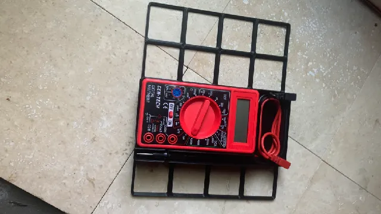

Gridfinity multimeter organizer
I designed a storage solution for a Harbor Freight Cen-Tech multimeter that keeps the meter, probe tips, and cable together in a single, compact footprint. The goal was simple: reduce bench clutter while making the tool easier to grab and return.
Open design brief ↗